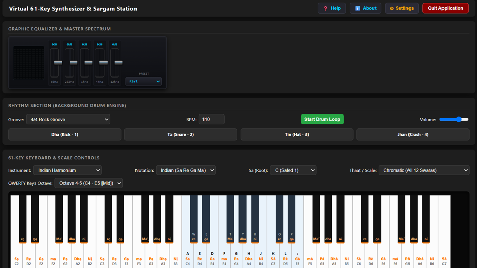
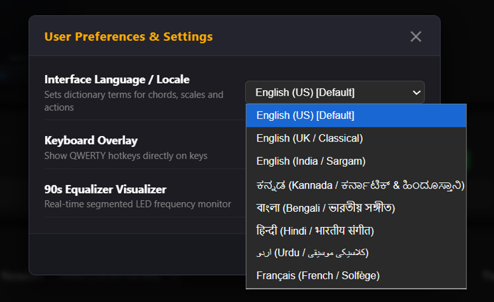
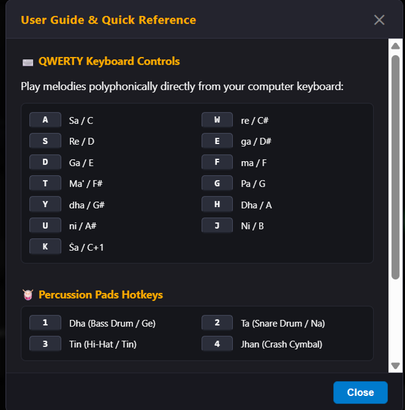
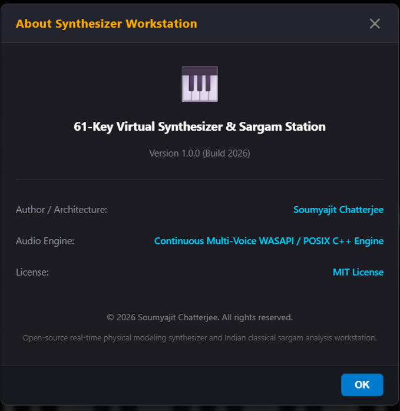

The application integrates real-time physical modeling synthesis with a multi-band graphic equalizer, backing rhythm engine, and an interactive 61-key keyboard accommodating both Indian classical Sargam and Western chromatic scales.

| Section | Key Features & Functional Parameters |
|---|---|
| Graphic Equalizer | 5-band sliders (60Hz, 250Hz, 1kHz, 4kHz, 12kHz), 90s-style segmented LED frequency visualizer, and sound presets (Flat, etc.). |
| Rhythm Section | Groove selection (4/4 Rock Groove), BPM slider/input (110 BPM), master drum loop toggle, volume fader, and 4 live percussion trigger pads. |
| Keyboard & Scales | Engine selector (Indian Harmonium, Piano, etc.), Notation toggle (Sa Re Ga Ma / Western), Root Sa pitch anchor, Thaat selector, and QWERTY Octave range switcher. |
Perform live melodies polyphonically using the QWERTY keyboard. Lower-row keys operate standard natural notes (Shuddha swaras), while the upper number/letter tier triggers accidentals (Komal/Teevra swaras).

| Key | Swara | Western | Key | Swara | Western | Percussion Pad | Voice |
|---|---|---|---|---|---|---|---|
| A | Sa | C | W | re | C# | 1 | Dha (Bass Drum / Ge) |
| S | Re | D | E | ga | D# | 2 | Ta (Snare Drum / Na) |
| D | Ga | E | T | Ma' | F# | 3 | Tin (Hi-Hat / Tin) |
| F | ma | F | Y | dha | G# | 4 | Jhan (Crash Cymbal) |
| G | Pa | G | U | ni | A# | Trigger live rhythmic fills directly over backing drum loops. | |
| H | Dha | A | K | Ṡa | C+1 | ||
| J | Ni | B | - | - | - | ||
The application provides extensive regional language translation for classical terminology across both Hindustani and Carnatic traditions, backed by a non-blocking audio engine.


| Category | Details & Supported Options |
|---|---|
| Supported Locales | English (US) [Default], English (UK / Classical), English (India / Sargam), ಕನ್ನಡ (Kannada), বাংলা (Bengali), हिन्दी (Hindi), اردو (Urdu), and Français (French / Solfège). |
| Visual Toggles | Interactive QWERTY Hotkey Keycap Overlays; Segmented 90s LED Frequency Visualizer on/off. |
| Audio Architecture | Continuous Multi-Voice WASAPI (Windows) and POSIX C++ engine with real-time soft limiting. |
| Licensing | Open-source physical modeling workstation distributed under the MIT License. |